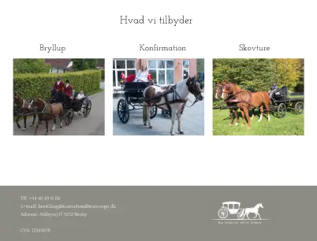
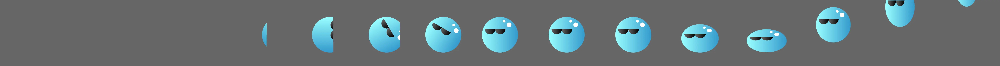

Web Design
A custom website is a reliable way to reach new people and expand your brand. StaalMedie's web design service provides user-friendly websites with layouts that adjust for different screen sizes.
Let your unique brand shine through with a custom website and bolster your reach.
Effective Branding

A custom website is the perfect place to truly show off your brand. From colors to banners to layouts, every aspect can be fine-tuned to let the world know what you stand for.
Do you already have a website that you feel isn't living up to its potential? No worries. I have experience redesigning websites. From colors to fonts to layouts, everything can be tested and reworked to enhance the user-experience and bolster your brand.
Animated Websites
Want to add an extra touch of personality to the site? Maybe you would like to add some extra flourish to a button? The solution is animation. From changing colors to moving buttons to sprite animations, I can animate any part of the website to improve the user-experience and make your personality shine through.
